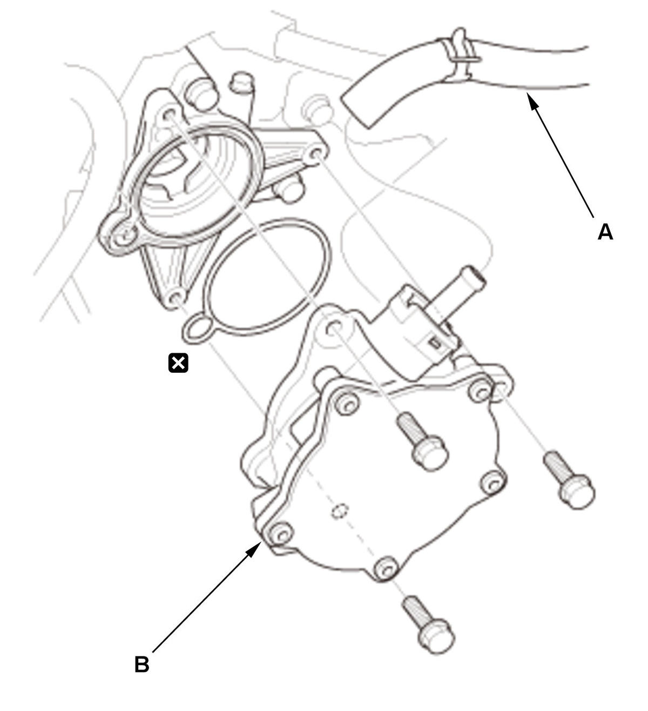
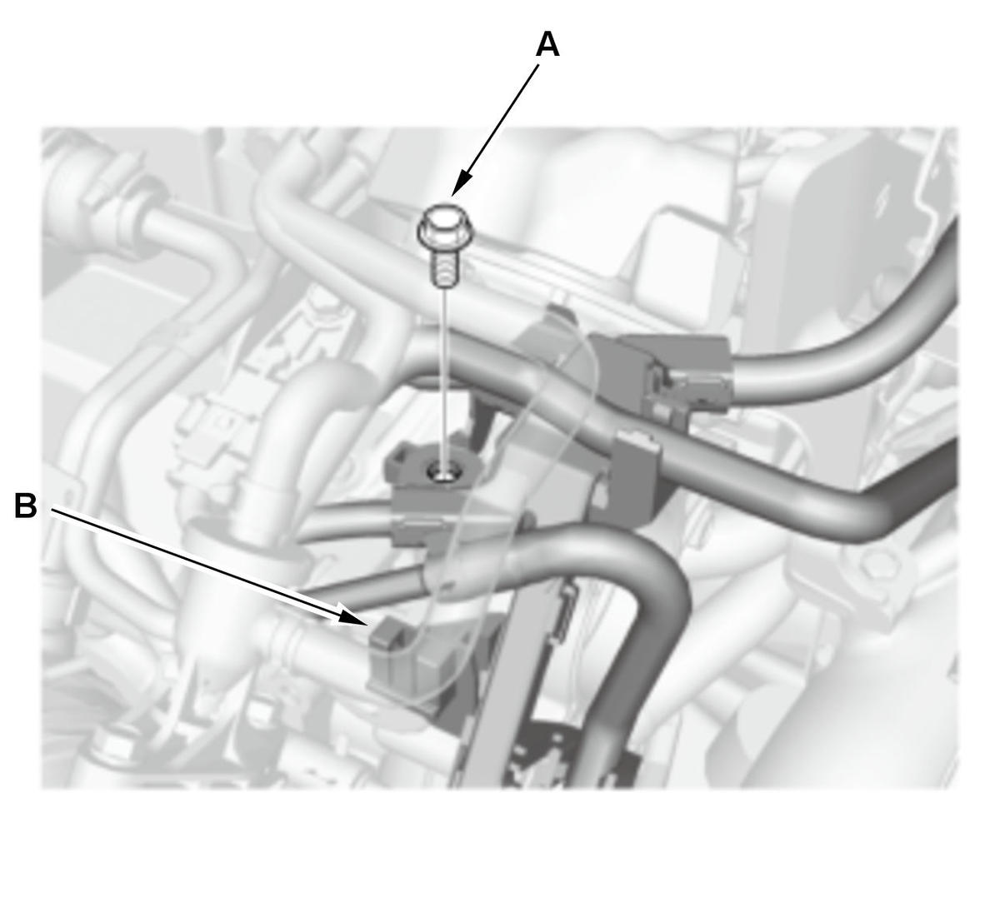
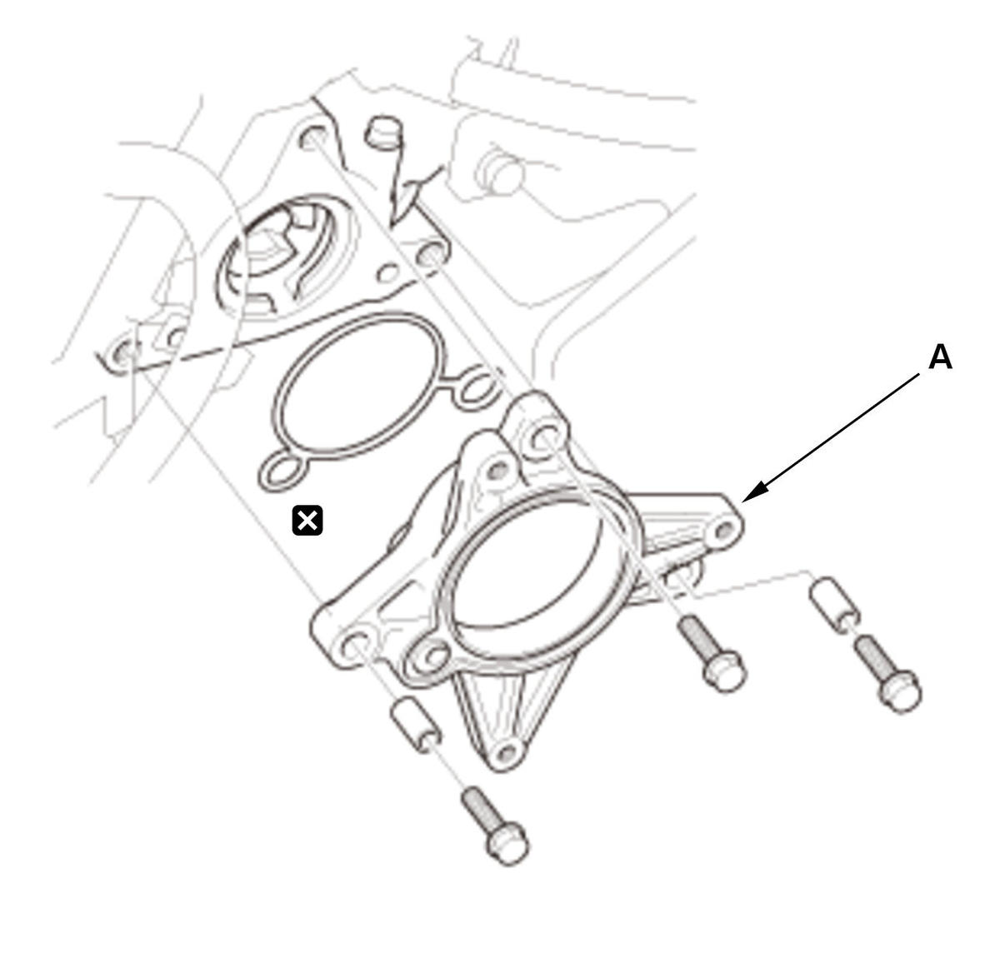

LEMON Manuals
: Even more car manuals for everyone: 1960-2025
Home
>>
Honda
>>
2016
>>
Civic LX, 4D Sedan, Automatic CVT Trans
>>
Repair and Diagnosis (Single Page)
>>
Brakes
>>
Mechanical - Hydraulic
>>
Brake System - Service Information
>>
Removal, Installation & Test
>>
Brake Booster Vacuum Pump Removal, Installation, and Test (Type-R) (2017 2018 2019 2020 2021)
>>
Removal
Brake Booster Vacuum Pump Removal, Installation, and Test (Type-R) (2017 2018 2019 2020 2021): Removal
Vacuum Pump
Vacuum Pump - Remove

Courtesy of HONDA, U.S.A., INC.
1. Disconnect the vacuum hose (A).
2. Remove the vacuum pump (B).
Vacuum Pump Holder
Vacuum Pump Holder - Remove

Courtesy of HONDA, U.S.A., INC.
1. Remove the bolt (A) and the clip (B).

Courtesy of HONDA, U.S.A., INC.
2. Remove the vacuum pump holder (A).